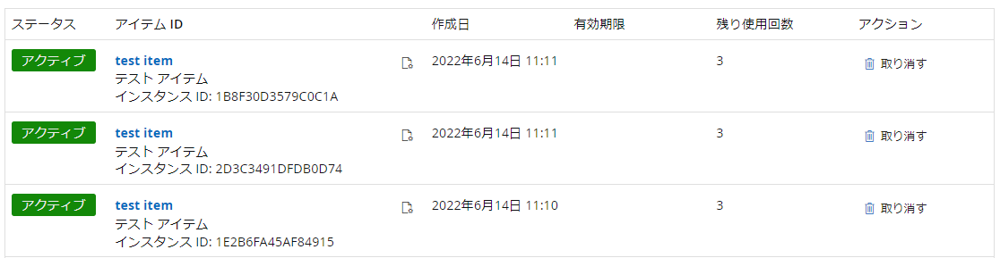
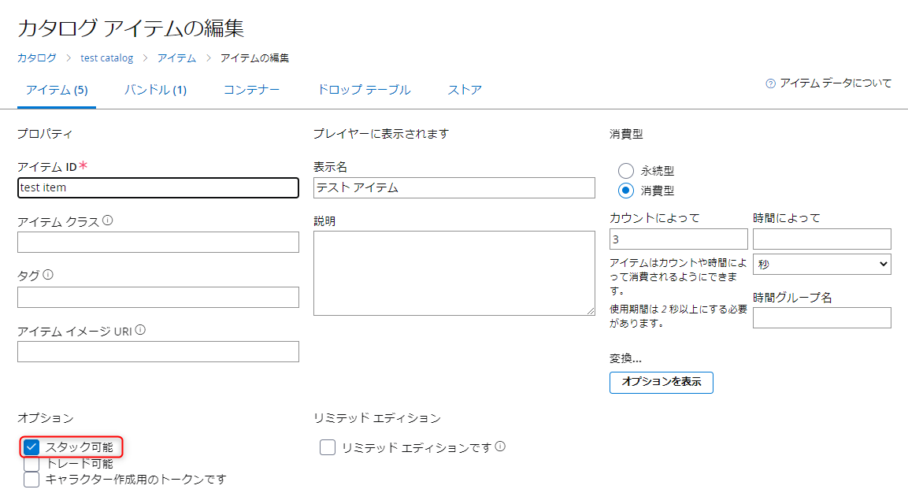
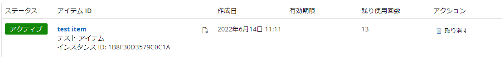

こんにちは、Japan Developer Support Core チームの近澤です。 私たちのチームではゲーム開発向けのバックエンド プラットフォームである Azure PlayFab もサポートしています。 今回は、PlayFab をご利用のお客様からよくお問い合わせいただく現象について、対処方法と合わせてご紹介します。
PlayFab にてプレイヤーにアイテムを付与する場合は、Grant Items To User API を使用してアイテムを付与しますが、呼び出し方によっては処理に時間がかかり、例えば CloudScript から呼び出した場合にタイムアウトしてしまうことがあります。
タイムアウトが発生する原因について
PlayFab のプレイヤー インベントリでは、高頻度で更新が要求された場合にパフォーマンスが大きく低下することがあります。 これはデータベースの設計に起因するもので、個々のプレイヤーのインベントリの更新頻度が高い場合に、更新が完了するまでにかかる時間が大きくなるものです。 Legacy CloudScript では 4.5 秒、Azure Functions を使用した現行の CloudScript では 10 秒のタイムアウトの制限があるため、頻繁にインベントリを更新し API のパフォーマンスが低下したことが原因で、CloudScript の処理時間がこの制限時間を超え、タイムアウトが発生することがあります。
GrantItemsToUser API でスタック可能ではない同一のアイテムを複数付与した場合、それぞれ別のアイテム インスタンスとしてプレイヤーのインベントリに追加されます。 この際、各アイテム インスタンスを追加するためのインベントリの更新がそれぞれ発生します。 そのため、GrantItemsToUser API の呼び出しが1回であっても、1度に多量のアイテムがプレイヤーに付与される場合に高頻度なインベントリの更新が発生し、タイムアウトを引き起こす原因となりえます。 例えば、あるアイテムを GrantItemsToUser API で10個付与した場合は、短時間のうちに 10回のインベントリの更新が発生します。
下記画像では、同一のアイテムである test item が Grant Items To User API により、3つのインスタンスに分かれて追加されている様子です。

なお、CloudScript にてこのタイムアウトが発生した場合でも、API 呼び出し自体は成功し、正常にアイテムが付与されることが想定されます。 これは、CloudScript が API を呼び出して以降、そのレスポンスを受け取るのに時間を要しタイムアウトしているのであり、API 呼び出し自体はパフォーマンスは低下しながらも処理は継続されているためです。
タイムアウトが発生する場合の対処法について
同一のアイテムを複数配布する場合は、スタック可能として設定することで同一のアイテム インスタンスとして追加し、インベントリの更新頻度を下げることができます。 アイテムをスタック可能にするには、PlayFab ポータルから対象のアイテムの設定を開き、 "スタック可能" にチェックを入れ保存します。 なお、既存アイテムを後からスタック可能に変更することも可能ですが、既に配布されたアイテムは別のインスタンスとして各プレイヤーのインベントリに残されたままになります。

また、アイテムの設定を変更することが難しい場合は、GrantItemsToUser API でアイテムを配布するのではなく、Modify Item Uses API を使用することで、インベントリ更新の負荷を低減できます。
Modify Item Uses API は既に配布されたアイテムの個数を変更する API です。 Modify Item Uses API を使用する場合は、既に配布された アイテムのインスタンス ID に対して追加もしくは削除したい個数を指定し、そのアイテムの残り使用回数を変更します。 これにより、インベントリ情報の変更が1回となり、高頻度なインベントリの更新を回避できます。
例えば、プレイヤー XXXXXXXXXXXXXXXX に 既に配布されたアイテムである test item を10個付与されたい場合は、下記の手順でアイテムを付与します。
- Get User Inventory API で対象のプレイヤーが既に対象のアイテム
test itemを持っているか確認し、アイテムのインスタンス ID を取得します。 - Modify Item Uses API で下記のようにリクエストを設定します。（下記はアイテムのインスタンス ID が 1B8F30D3579C0C1A であった場合の例です。）
1 | { |
上の呼び出しにより、残り使用回数が 3回であった test item が 13回に更新されました。

プレイヤーが対象のアイテムを持っていなかった場合は、GrantItemsToUser API で1つアイテムを付与し、Modify Item Uses API で数を変更する形で実装します。 なお、UsestoAdd に負の数を指定した場合は、その数だけアイテムを減少させます。
最後に
上記のような手続きは、タイムアウトのような問題が発生していない場合は、特別対応いただく必要はありませんが、アイテムのインスタンスを減らし、PlayFab ポータルからプレイヤーのインベントリを確認しやすくするメリットもありますので、ぜひご活用ください。
本ブログの内容は弊社の公式見解として保証されるものではなく、開発・運用時の参考情報としてご活用いただくことを目的としています。もし公式な見解が必要な場合は、弊社ドキュメント (https://learn.microsoft.com や https://support.microsoft.com) をご参照いただくか、もしくは私共サポートまでお問い合わせください。